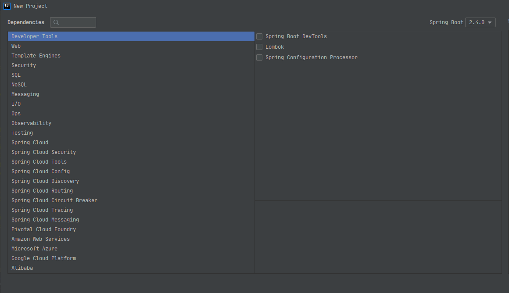

前言
idea 可以通过Spring Initializr创建SpringBoot/SpringCloud项目并勾选引用第三方组件，阿里巴巴也发行了类似的插件Alibaba Java Initializr(可在插件市场搜索安装)

可以看到分类还是不少的，下面我就逐一分享下每个分类及可选择的组件和使用场景
idea版本基于2020.2, 不同idea可能会有出入，Spring Boot基于2.4.0，更详细的见https://start.spring.io/
说明
Spring Initializr具有以下模块：
Developer Tools 开发工具
- Arthas: Arthas 是Alibaba开源的Java诊断工具，允许开发者在不修改代码或重启服务器的基础上，实现Java应用程序的运行时诊断，深受开发者喜爱
- Spring Boot DevTools: Provides fast application restarts, LiveReload, and configurations for enhanced development experience. 提供快速的应用程序重启、实时重新加载、配置，以增强开发体验。
- Lombok: Java annotation library which helps to reduce boilerplate code. 有助于减少样板代码的Java注释库。
- Spring Configuration Processor: Generate metadata for developers to offer contextual help and “code completion” when working with custom configuration keys(ex.application.properties/.yml files). 生成元数据 供开发人员在使用自定义配置键 (例如，application.properties/.yml)时提供上下文帮助和”代码补全”。
web
- Spring Web: Build web, including RESTful, applications using Spring MVC. Uses Apache Tomcat as default embedded container. 使用Spring MVC构建web(包含RESTful)应用程序。使用Apache Tomcat作为默认的嵌入式容器。
- Spring Reactive Web: Build reactive web applications with Spring WebFlux and Netty. 使用Spring WebFlux和Netty构建响应式Web应用程序。
- Rest Repositories: Exposing Spring Data repositories over REST via Spring Data REST. 使用Spring Data REST以REST形式暴露Spring Data存储库。
- Spring Session: Provides an API and implementations for managing user session information. 提供用于管理用户会话信息的API和实现。
- Rest Repositories HAL Explorer: Browsing Spring Data REST repositories in your browser. 在浏览器中浏览Spring Data REST仓库。
- Rest Repositories HAL Browser: Requires Spring Boot Version >=2.0.0.RELEASE and <2.2.0-M1 Browsing Spring Data REST repositories in you browser. 在浏览器中浏览Spring Data REST仓库。
- Spring HATEOAS: Eases the creation of RESTful APIs that follow the HATEOAS principle when working with Spring / Spring MVC. 在使用Spring/Spring MVC时，轻松创建遵循HATEOAS原理的RESTful API。
- Spring Web Services: Facilitates contract-first SOAP development. Allows for the creation of flexible web using one of the many ways to manipulate XML payloads. 促进约定优先的SOAP开发，允许使用多种操作XML有效负载的方式之一来创建灵活的Web服务。
- Jersey: Framework for developing RESTful Web Services in Java that provides support for JAX-RS APIs. 用Java开发RESTful Web服务的框架，该框架提供对JAX-RS API的支持。
- Vaadin: Java framework for building rich client apps based on Web componens. Java框架，用于基于Web组件构建富客户端应用程序。
Template Engines 模板引擎
- Thymeleaf: A modern server-side Java template engine for both web and standlone environments. Allows HTML to be correctly displayed in borwsers and as static prototypes. 适用于Web和独立环境的现代服务器端Java模板引擎。允许HTML在浏览器中正确显示为静态原型。
- Apache Freemarker: Java library to generate text output (HTML web pages, e-mails, configuration files, source, etc.) based on templates and changing data. 用于根据模板和更改的数据生成文本输出(HTML网页、电子邮件、配置文件、源代码等)的Java库。
- Mustache: login-less Templates. There are no if statements, else clauses, or for loops. Instead there are only tags. 无逻辑的模板。没有if语句、else字句或者for循环。相反，只有标签。
- Groovy Templates: Groovy templating engine. Groovy模板引擎。
Security
- Spring Security: Highly customizable authentication and access-control framework for Spring applications. 用于Spring应用程序的高度可定制的身份验证和访问控制框架。
- OAuth2 Client: Spring Boot integration for Spring Security’s OAuth2/OpenId Connect client features. 用于Spring Security的OAuth2/OpenId Connect 客户端功能的Spring Boot集成。
- OAuth2 Resource Server: Spring Boot integration for Spring Security’s QAuth2 resource server features. 用于Spring Security的OAuth2资源服务器功能的Spring Boot集成。
- Spring LDAP: Makes it easier to build Spring based applications that use the Lightweight Directory Access Protocol. 让使用轻量级目录访问协议的基于Spring的应用程序的构建更加容易。
- Okta: Okta specific configuration for Spring Security/Spring Boot OAuth2 features. Enable your Spring Boot application to work with Okta via OAuth 2.0/OIDC. Okta特定于Spring Security/Spring Boot OAuth2功能的配置。使您的Spring Boot应用程序能够通过OAuth 2.0/OIDC与Okta一起使用。
SQL
- JDBC API: Database Connectivity API that defines how a client may connect and query a database. 数据库连接API，定义客户端如何连接和查询数据库。
- Spring Data JPA: Persist data in SQL stores with Java Persistence API using Spring Data and Hibernate. 通过Java Persistence API 使用Spring Data和Hibernate在SQL存储中持久化数据。
- Spring Data JDBC: Persist data in SQL stores with plain JDBC using Spring Data. 使用Spring Data时，通过纯JDBC在SQL存储中持久化数据。
- Spring Data R2DBC: Provides Reactive Relational Database Connectivity to persist data in SQL stores using Spring Data in reactive applications. 提供响应式关系型数据库连接。以在响应式应用程序中使用Spring Data将数据存储在SQL存储中。
- MyBatis Framework: Persistence framework with support for custom SQL, stored procedures and advanced mappings. MyBatis couples objects with stored procedures or SQL statements using a XML descriptor or annotations. 持久化框架，支持自定义SQL，存储过程和高级映射。Mybatis使用XML描述符或注解将对象与存储过程或SQL语句耦合。
- Liquibase Migration: Liquibase database migration and source control library. Liquibase数据库迁移和源代码控制库。
- Flyway Migration: Version control for your database so you can migrate from any version (incl.an empty database) to the latest version of the schema. 数据库的版本控制，您可以从任何版本(包括空数据库)迁移到架构的最新版本。
- JOOQ Access Layer: Generate Java code from your database and build type safe SQL queries through a fluent API. 从数据库中生成Java代码，并通过流畅的API构建类型安全的SQL查询。
- IBM DB2 Driver: A JDBC driver that provides access to IBM DB2. 提供对IBM DB2访问的JDBC驱动程序。
- Apache Derby Database: An open source relational database implemented entirely in Java. 一个完全用Java实现的开源关系型数据库。
- H2 Database: Provides a fast in-memory database that supports JDBC API and R2DBC access, with a small (2mb) footprint. Supports embedded and server modes as well as a browser based console application. 提供一个快速的内存数据库，该数据库支持JDBC API和R2DBC访问，并且占用空间很小(2mb)。支持嵌入式和服务器模式以及基于浏览器的控制台应用程序。
- HyperSQL Database: Lightweight 100% Java SQL Database Engine. 轻量级100% Java SQL数据库引擎。
- MS SQL Server Driver: A JDBC and R2DBC driver that provides access to Microsoft SQL Server and Azure SQL Database from any Java application. JDBC和R2DBC驱动程序，可以从任何Java应用程序访问Microsoft SQL Server和Azure SQL数据库。
- MySQL Driver: MySQL JDBC and R2DBC driver. MySQL JDBC和R2DBC驱动程序。
- Oracle Driver: A JDBC driver that provides access to Oracle. 提供对Oracle访问的JDBC驱动程序。
- PostgreSQL Driver: A JDBC and R2DBC driver that allows Java programs to connect to a PostgreSQL database using standard, database independent Java code. JDBC和R2DBC驱动程序，允许Java程序使用标准的、独立于数据库的Java代码连接到PostgreSQL数据库。
NoSQL
- Spring Data Redis (Access+Driver): Advanced and thread-safe Java Redis client for synchronous, asynchronous, and reactive usage. Supports Cluster, Sentinel, Piperlining, Auto-Reconnect, Codecs and much more. 先进且线程安全的Java Redis客户端，用于同步、异步和响应式使用。支持集群、哨兵、管道、自动重连、编解码器等。
- Spring Data Reactive Redis: Access Redis key-value data stores in a reactive fashion with Spring Data Redis. 使用Spring Data Redis以响应式访问Redis键值数据存储。
- Spring Data MongoDB: Store data in flexible, JSON-like documents, meaning fields can vary from document to document and data structure can be change over time. 将数据存储在灵活的、类似于JSON的文档中，这意味着字段随文档的不同而不同，并且数据结构可以随时间变化。
- Spring Data Reactive MongoDB: Provides asynchronous stream processing with non-blocking back pressure for MongoDB. 为MongoDB提供具有无阻塞背压的异步流处理。
- Spring Data Elasticsearch (Access+Driver): A distributed, RESTful search and analytics engine with Spring Data Elasticsearch. 带有Spring Data Elasticsearch的分布式RESTful搜索和分析引擎。
- Spring Data for Apache Solr: Apache Solr is an open source enterprise search platform built on Apache Lucene. Apache Solr是基于Apache Lucene构建的开源企业搜索平台。
- Spring Data for Apache Cassandra: A free and open-source, distributed, NoSQL database management system that offers high-scalability and high-performance. 一个免费开源的NoSQL分布式数据库管理系统，可提供高可伸缩性和高性能。
- Spring Data Reactive for Apache Cassandra: Access Cassandra NoSQL Database in a reactive fashion. 以响应式方式访问Cassandra NoSQL数据库。
- Spring for Apache Geode: Apache Geode is a data management platform that helps users build real-time, highly concurrent, highly performant and reliable Spring Boot applications at scale that is compatible with Pivotal Cloud Cache. Apache Geode是一个数据管理平台，可帮助用户大规模构建与Pivotal Cloud Cache兼容的实时、高并发、高性能和可靠的Spring Boot应用程序。
- Spring Data Couchbase: NoSQL document-oriented database that offers in memory-first architecture, geo-distributed deployments, and workload isolation. NoSQL面向文档的数据库，提供内存优先的体系结构，地理分布的部署和工作负载隔离。
- Spring Data Reactive Couchbase: Access Couchbase NoSQL database in a reactive fashion with Spring Data Couchbase. 使用Spring Data Couchbase以响应式方式访问Couchbase NoSQL数据库。
- Spring Data Neo4j: An open source NoSQL database that stores data structured as graphs consisting of nodes, connected by relationships. 一个开源的NoSQL数据库，该数据库存储结构化为图形的数据，这些图形由通过关系连接额节点组成。
Messaging 消息
- Spring Integration: Adds support for Enterprise Integration Patterns. Enables lightweight messaging and supports integration with external systems via declarative adapters. 添加了对企业集成模式的支持。支持轻量级消息传递，并通过申明性适配器支持与外部系统的集成。
- Spring for RabbitMQ: Gives your applications a common platform to send and receive messages, and your messages a safe place to live until received. 为您的应用程序提供一个发送和接收消息的通用平台，并使您的消息在一个安全的生存环境中，直到收到消息为止。
- Spring for Apache Kafka: Publish, subscribe, store, and process streams of records. 发布、订阅、存储和处理记录流。
- Spring for Apache kafka Streams: Building stream processing applications with Apache kafka Streams. 使用Apache Kafka Streams构建流处理应用程序。
- Spring for Apache ActiveMQ 5: Spring JMS supports with Apache ActiveMQ ‘Classic’. 带有Apache ActiveMQ ‘Classic’模式的Spring JMS支持。
- Spring for Apache ActiveMQ Artemis: Spring for Apache ActiveMQ Artemis. 带有Apache ActiveMQ ‘Artemis’模式的Spring JMS支持。
- WebSocket: Build WebSocket applications with SockJS and STOMP. 使用SockJS和STOMP构建WebSocket应用程序。
- RSocket: RSocket.io application with Spring Messaging and Netty. 带有Spring Messaging和Netty的RSocket.io应用程序。
- Apache Camel: (Requires Spring Boot Version >=2.0.0.M1 and <2.4.0-M1) Apache Camel is an open source integration framework that empowers you to quickly and easily integrate various systems consuming or producing data. Apache Camel是一个开源集成框架，可让您快速轻松地集成使用或生成数据的各种系统。
- Solace PubSub+: Connect to a Solace PubSub+ Advanced Event Broker to publish, subscribe, request/reply and store/relpay messages 连接到Solace PubSub+ Adanced Event Broker以发布、订阅，请求/答复以及存储/重播消息。
I/O 输入/输出
- Spring Batch: Batch applications with transactions, retry.skip and chunk based processing. 批处理应用程序，具有事务、重试/跳过和基于块的处理。
- Validation: JSR-303 validation with Hibernate validator. 使用Hibernate验证程序进行JSR-303验证。
- Java Mail Sender: Send email using Java Mail and Spring Framework’s JavaMailSender. 使用Java Mail和Spring Framework的JavaMailSender发送电子邮件。
- Quartz Scheduler: Schedule jobs using Quartz. 使用Quartz调度作业。
- Spring cache abstraction: Provides cache-related operations, such as the ability to update the content of the cache, but does not provide the actual data store. 提供与缓存有关的操作，例如更新缓存内容的能力，但不提供实际的数据存储。
Ops
- Spring Boot Actuator: supports built in (or custom) endpoints that let you monitor and manage your application - such as application health, metrics, sessions, etc. 支持内置(或自定义)端点，使您可以监视和管理应用程序-例如应用程序运行状况，指标，会话等。
- Codecentric’s Spring Boot Admin (Client): Required for your application to register with a Codecentric’s Spring Boot Admin Server instance. 应用程序向Spring Boot Admin Server实例注册所必要的依赖。
- Codecentric’s Spring Boot Admin (Server): A community project to manage and monitor your Spring Boot applications. Provides a UI on top of the Spring Boot Actuator endpoints. 一个社区项目，用于管理和监视您的Spring Boot应用程序。在Spring Boot Actuator端点的顶部提供一个UI。
Observability 观测
- Datadog: Datadog is a dimensional time-series SAAS with built-in dashboarding and alerting. Datadog是具有内置仪表板和警报功能的维度时间序列SAAS。
- Influx: Support real-time stream processing and storage of time-series data. 支持实时流处理和时间序列数据的存储。
- Graphite: Hierarchical metrics systems backed by a fixed-size database. 由固定大小的数据库支持的分层度量标准系统。
- New Relic: SaaS offering with a full UI and a query language called NRQL. 具有完整UI和称为NRQL的查询语言的Saas产品。
- Prometheus: An in-memory dimensional time series database with a simple built-in UI, a custom query language, and math operations. 具有简单内置UI，自定义查询语言和数学运算的内存中维时间序列数据库。
- Wavefront: Tanzu Observability by Wavefront is a SaaS-based metrics monitoring and analytics platform that lets you visualize, query, and alert over data from across your entire stack (infrastructure, network, custom app metrics, bussiness KPIs, etc.) Wavefront的Tanzu Observability是基于SaaS的指标监视和分析平台，可让您可视化，查询和警告整个堆栈中的数据(基础结构、网络、自定义应用程序指标、业务KPI等)
Testing 测试
- Spring REST Docs: Document RESTful services by combining hand-written with Asciidoctor and auto-generated snippets produced with Spring MVC Test. 通过结合使用Asciidoctor手写和通过Spring MVC Test自动生成的代码片段来记录RESTful服务。
- Testcontainers: Provide lightweight, throwaway instances of common databases, Selenium web browsers, or anything else that can run in a Docker container.
- Contract Verifier: Moves TDD to the level of software architecture by enabling Consumer Driven Contract (CDC) development. 通过启用“消费者驱动合同”（CDC）开发，将TDD升级到软件体系结构级别
- Contract Stub Runner: Stub Runner for HTTP/Messaging based communication. Allows creating Wire Mock stubs from RestDocs tests. Stub Runner，用于基于 HTTP/消息 传递的通信。允许通过RestDocs测试创建WireMock存根。
- Embedded LDAP Server: Provides a platform neutral way for running a LDAP server in unit tests. 提供在单元测试中运行LDAP服务器的平台无关的方法。
- Embedded MongoDB Database: Provodes a platform neutral way for running MongoDB in unit tests. 提供在平台测试中运行MongoDB的平台无关的方法。
- Junit：Java语言的单元测试框架
cola 架构
- cola-core: COLA框架的核心库
- cola-common: COLA框架通用组件
other
- Fastjson: Fastjson 是一个 Java 库，可以将 Java 对象转换为 JSON 格式，当然它也可以将 JSON 字符串转换为 Java 对象。
- Jackson Databind：Jackson 是一个序列化库，可以将 Java 对象转换为 JSON 格式，当然它也可以将 JSON 字符串转换为 Java 对象。
- Apache Commons Lang: Java实用程序类的软件包，用于java.lang的层次结构中的类，或者被认为是标准的以证明存在于java.lang中。
- Gson：Gson 是一个 Google 开发的序列化库，可以将 Java 对象转换为 JSON 格式，当然它也可以将 JSON 字符串转换为 Java 对象。
- Commons-io: Commons IO is a library of utilities to assist with developing IO functionality.
Spring Cloud
- Cloud Bootstrap: Mon-specific Spring Cloud features, unrelated to external libraries or integrations (e.g Bootstrap context and @RefreshScope).
- Function: Promotes the implementation of business logic via functions and supports a uniform programming model across serverless providers, as well as the ability to run standalone (locally or in a Pass).
- Task: Allows a user to develop and run short lived microservices using Spring Cloud. Run them locally, in the cloud, and on Spring Cloud Data Flow.
Spring Cloud Security
- Cloud Security: A declarative model whitch can be heavily configured externally (or centrally) lends itself to the implementation of large system of co-operating, remote components, usually with a central indentity management service.
- Cloud OAuth2: OAuth2 and distributed application patterns with spring-cloud-security.
Spring Cloud Tools
- Cloud Connectors: (Requires Spring Boot Version >=2.0.0.RELEASE and <2.3.0.M1) Simplifies the process of connecting to services and gaining operating environment awareness in cloud platforms such as Cloud Foundry and Heroku.
- Open Service Broker: (Requires Spring Boot Version >=2.0.0.RELEASE and <2.4.0.M1) Framework for building Spring Boot apps that implement the Open Service Broker API, which can deliver services to applications running within cloud native platforms such as Cloud Foundry, Kubernetes and OpenShift.
Spring Cloud Config
- Config Client: Client that connects to a Spring Cloud Config Server to fetch the application’s configuration.
- Config Server: Central management for configuration via Git, SVN, or HashiCorp Vault.
- Vault Configuration: Provides client-side support for externalized configuration in a distributed system. Using HashiCorp’s Vault you hava a central place to manage external secret properties for applications across all environments,
- Apache Zookeeper Configuration: Enable and configure common patterns inside your application and build large distributed systems with Apache Zookeeper based components. The provided patterns include Service Discovery and Configuration.
- Consul Configuration: Enable and configure the common patterns inside your application and build large distributed system with Hashicorp’s Consul. The patterns provided include Service Discovery, Distributed Configuration and Control Bus.
Spring Cloud Discovery
- Eureka Discovery Client: a REST based service for locating services for th purpose of load balancing and failover of middle-tier servers.
- Eureka Server: spring-cloud-netflix Eureka Server.
- [Apache Zookeeper Discovery](Service discovery with Apache Zookeeper.)
- Cloud Foundry Discovery: Service discovery with Cloud Foundry.
- Consul Discovery: Service discovery with Hashicorp Consul.
Spring Cloud Routing
- Zuul [Maintenance]: (Requires Spring Boot Version >=2.0.0.RELEASE and <2.4.0-M1) Intelligent and programmable routing with Spring Cloud Netflix Zuul.
- Gateway: Provides a simple, yet effective way to route to APIs and provide cross cutting concerns to them such as security, monitoring/metrics, and resiliency.
- Ribbon [Maintenance]: (Requires Spring Boot Version >=2.0.0.RELEASE and <2.4.0-M1) Client-side load-balancing with Spring Cloud Netflix and Ribbon.
- OpenFeign: Declarative REST Client. OpenFeign creates a dynamic implemention of an interface decorated with JAX-RS or Spring MVC annotations.
- Cloud LoadBalancer: Client-side load-balancing with Spring CLoud LoadBalancer.
Spring Cloud Circuit Breaker:
- Resilience4j: Spring Cloud Circuit breaker with Resilience4j as the underlying implementation.
- Hystrix [Maintenance]: (Requires Spring Boot Version >=2.0.0.RELEASE and <2.4.0-M1) Circuit breaker with Spring Cloud Netflix Hystrix.
- Hystrix Dashboard [Maintenance]: (Requires Spring Boot Version >=2.0.0.RELEASE and <2.4.0-M1) Circuit breaker dashboard with Spring Cloud Netflix Hystrix.
- Turbine [Maintenance]: (Requires Spring Boot Version >=2.0.0.RELEASE and <2.4.0-M1) Circuit breaker metric aggregation using spring-cloud-netflix with Turbine and server-sent events.
- Turbine Stream [Maintenance]: (Requires Spring Boot Version >=2.0.0.RELEASE and <2.4.0-M1) Circuit breaker metric aggregation using spring-cloud-netflix with Tuibine and Spring Cloud Stream (requires a binder, e.g. Apache Kafka or RabbitMQ).
Spring Cloud Tracing
- Sleuth: Distributed tracing via logs logs with Spring Cloud Sleuth.
- Zipkin Client: Distributed tracing with an existing Zipkin installation and Spring Cloud Sleuth Zipkin.
Spring Cloud Messaging
- Cloud Bus: Links nodes of a distributed system with a lightweight message broker which can used to broadcast state changes or other management instructions (requires a binder, e.g. Apache Kafka or RabbitMQ).
- Cloud Stream: Framework for building highly scalable event-driven microservices connected with shared messaging systems (requires a binder, e.g. Apache Kafka, RabbitMQ or Solace PubSub+).
- Reactive Cloud Stream: (Requires Spring Boot Version >=2.0.0.RELEASE and <2.2.0.M1) Reactive messaging microservices with Spring Cloud Stream (requires a binder, e.g. Apache Kafka or RabbitMQ).
Pivotal Cloud Foundry
- Config Client (PCF): (Requires Spring Boot Version >=2.0.0.RELEASE and <2.4.0-M1) Config client on Pivotal Cloud Foundy.
- Service Registry (PCF): (Requires Spring Boot Version >=2.0.0.RELEASE and <2.4.0-M1) Eureka service discovery client on Pivotal Cloud Foundry.
- Circuit Breaker (PCF): (Requires Spring Boot Version >=2.0.0.RELEASE and <2.4.0-M1) Hystrix circuit breaker client on Pivotal Cloud Foundry.
Amazon Web Services
- AWS Core: (Requires Spring Boot Version >=2.0.0.RELEASE and <2.4.0-M1) AWS native services from Spring Cloud for AWS.
- AWS RDS: (Requires Spring Boot Version >=2.0.0.RELEASE and <2.4.0-M1) Relational databases on AWS with RDS and Spring Cloud AWS JDBC.
- AWS Simple Queue Service: (Requires Spring Boot Version >=2.0.0.RELEASE and <2.4.0-M1) Messaging on AWS with SQS and Spring Cloud AWS Messaging.
Microsoft Azure
- Azure Support: (Requires Spring Boot Version >=2.0.0.RELEASE and <2.4.0-M1) Auto-configuration for Azure Services (Service Bus, Storage, Active Directory, Cosmos DB, Key Vault, and more).
- Azure Active Directory: (Requires Spring Boot Version >=2.0.0.RELEASE and <2.4.0-M1) Spring Security integration with Azure Active Directory for authentication.
- Azure key Vault: (Requires Spring Boot Version >=2.0.0.RELEASE and <2.4.0-M1) Manage application secrets and keys.
- Azure Storage: (Requires Spring Boot Version >=2.0.0.RELEASE and <2.4.0-M1) Azure Storage service integration.
Google Cloud Platform
- GCP Support: Contains auto-configuration support for every Spring Cloud GCP integration. Most of the auto-configuration code is only enabled if other dependencies are added to the classpath.
- GCP Messaging: Adds the GCP Support entry and all the required dependencies so that the Google Cloud Pub/Sub integration work out of the box.
- GCP Storage: Adds the GCP Support entry and all the required dependencies so that the Google Cloud Storage integration work out of the box.
Alibaba
- Nacos Configuration: (Requires Spring Boot Version >=2.2.0.RELEASE and <2.3.0.M1) Support for externalized configuration in a distributed system, auto refresh when configuration changes. 通过Alibaba Nacos实现配置管理：支持分布式系统中的外部化配置、配置更改时自动刷新功能。
- Nacos Service Discovery: (Requires Spring Boot Version >=2.2.0.RELEASE and <2.3.0.M1) Service discovery with Alibaba Nacos. 通过nacos实现的服务发现平台
- Sentinel: (Requires Spring Boot Version >=2.2.0.RELEASE and <2.3.0.M1) Flow control and circuit breaking with Alibaba Sentinel.提供 Sentinel 自动接入和配置支持，提供 Spring Web/WebFlux、Feign、RestTemplate、注解等适配。
- Sentinel Example
- Sentinel DataSource: 提供 Sentinel 动态数据源接入支持，方便用户整合 Nacos 等数据源动态管理规则
- Sentinel Dubbo Adapter: 提供 Sentinel 对 Dubbo 的适配能力。
- Sentinel Gateway: 提供 Sentinel 网关流控自动接入支持，目前支持 Spring Cloud Gateway 和 Zuul。
- Dubbo：Apache Dubbo™ 是一款高性能 Java RPC 框架。
- RocketMQ Binder：一款开源的分布式消息系统，基于高可用分布式集群技术，提供低延时的、高可靠的消息发布与订阅服务
- Seata: 阿里巴巴开源产品，一个易于使用的高性能微服务分布式事务解决方案。
- ANS: ANS(Application Naming Service) is a component of EDAS. Spring Cloud Alibaba Cloud ANS provides the commercial version of service registration and discovery in conformity with the Spring Cloud specifications, so that you can develop your applications locally and run them on the cloud.
- ACM: Spring Cloud AliCloud ACM is an implementation of the commercial product Application Configuration Management(ACM) in the client side of Spring Cloud, and is free of charge.
- OSS: 阿里云对象存储服务（Object Storage Service，简称 OSS），是阿里云提供的海量、安全、低成本、高可靠的云存储服务。您可以在任何应用、任何时间、任何地点存储和访问任意类型的数据。
- SchedulerX: 阿里中间件团队开发的一款分布式任务调度产品，提供秒级、精准、高可靠、高可用的定时（基于 Cron 表达式）任务调度服务。
- SMS: 覆盖全球的短信服务，友好、高效、智能的互联化通讯能力，帮助企业迅速搭建客户触达通道。
- Nepxion Discovery：一款集成Spring Cloud Alibaba、Nacos、Sentinel等阿里巴巴中间件，实现网关和服务的灰度发布、路由、权重、限流、熔断、降级、隔离、监控、追踪等功能的微服务开源解决。
- RDS: 阿里云关系型数据库RDS（Relational Database Service）是一种稳定可靠、可弹性伸缩的在线数据库服务，提供容灾、备份、恢复、迁移等方面的全套解决方案，彻底解决数据库运维的烦恼。
更多阿里云相关产品可访问https://start.aliyun.com/